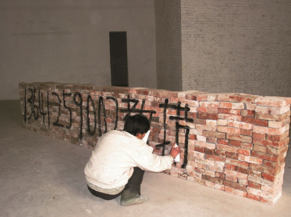
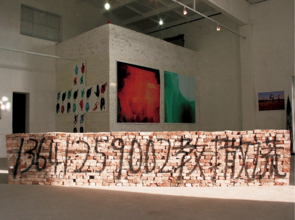
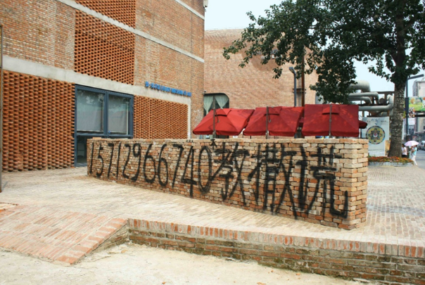

This works I inspiration of from Beijing street. On the wall of Beijing street or road everywhere appear a lot of small advertisement by spray or paste from private small companies since late 90's, it's look like socially directed art and reflect realest situation and process of China rebuilt and reconstruction social life. I employed two “Nongmingong”（1）workers to build a size 500x90x30cm wall by old bricks and use black spray to write a large advertisement:
15712966740教撒谎 (My mobile phone number and three Chinese words in English means:15712966740 Teach Lie)
My art form is appropriation from Beijing street, but I changed the content of advertisement.
These small advertisements on street s same as new urban folk art, they directed reflect people's desire. During the show time I was received a few phone from audience, they ask me if how much per hour? I said to them I am not a teacher that just for a joking.
I remember this work cost a total of 75 RMB (around 10 USD). At the time, there happened to be a pile of unused old bricks in the courtyard where the exhibition was being set up, so I used them as the material for the piece. The cost covered the labor of two “Nongmingong” workers who built the wall, the fee for spraying the text onto the wall, and the purchase of two cans of spray paint.
The work Teaching Lies was shown again in 2011 during my solo exhibition, but this time it was displayed outdoors.
（1）“Nongmingong” （Rural migrant workers）are rural-registered Chinese who live and work in cities. With little education, they mostly do low-paid, physical labor. Despite building modern cities, the hukou system denies them and their children basic rights like schooling—a system that remains unchanged.

The Work “Teach Lie”, 2005

The Work “Teach Lie”, 2005

The Work “Teach Lie”, 2011